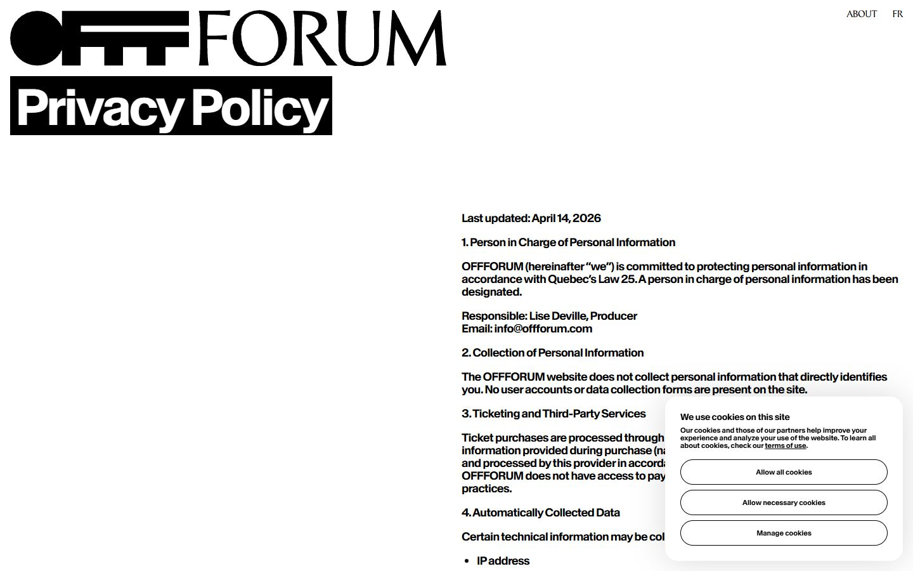
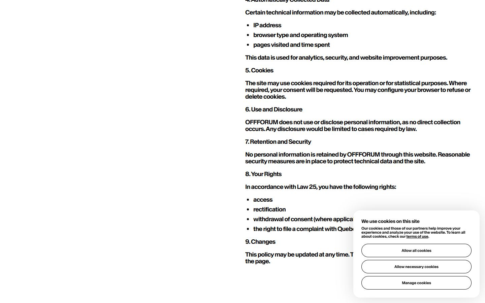
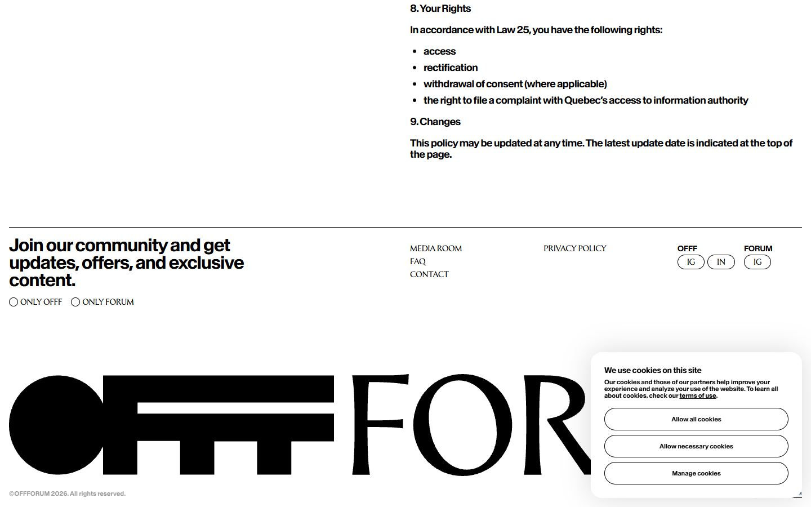
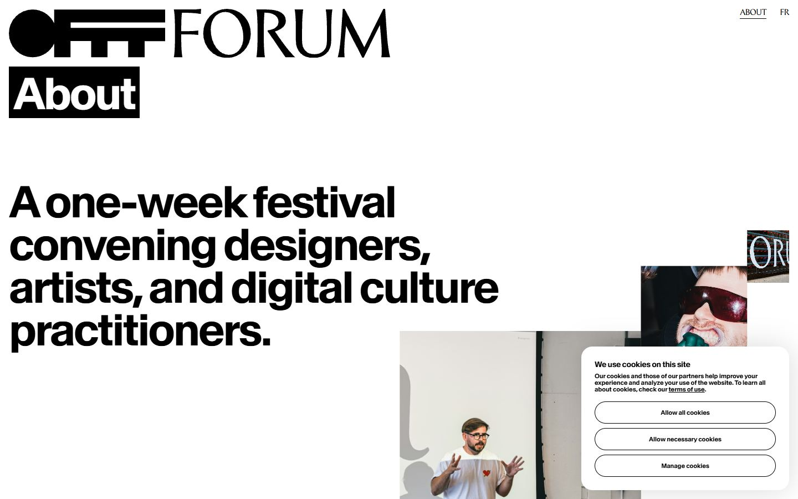
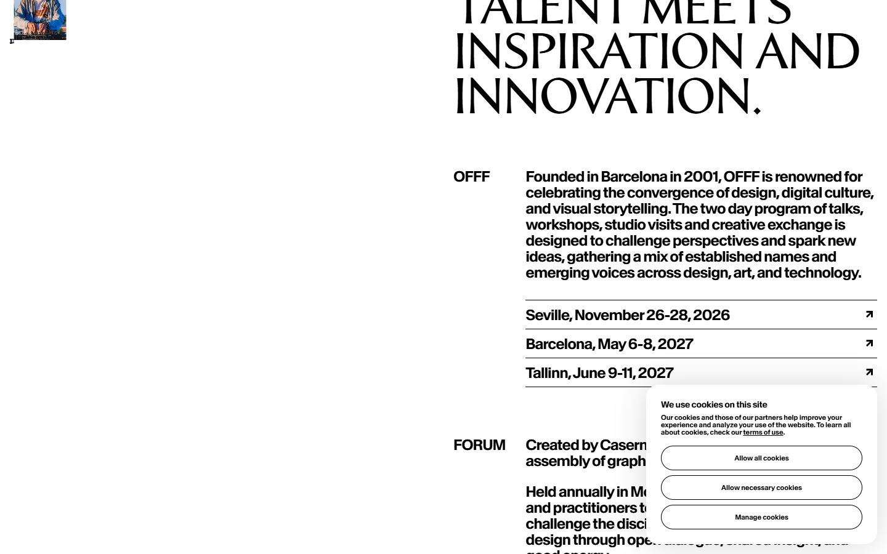
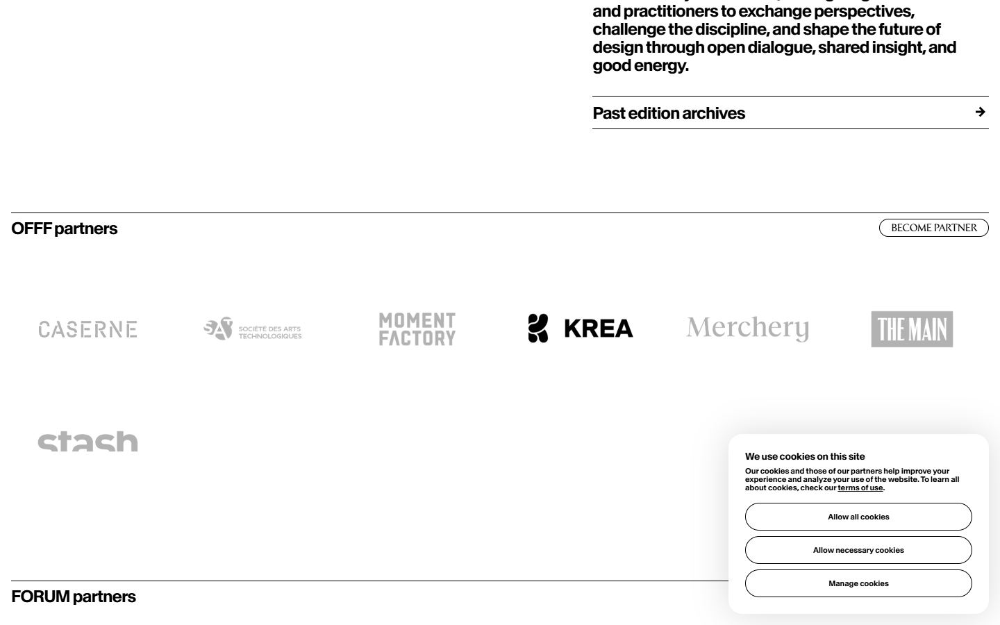
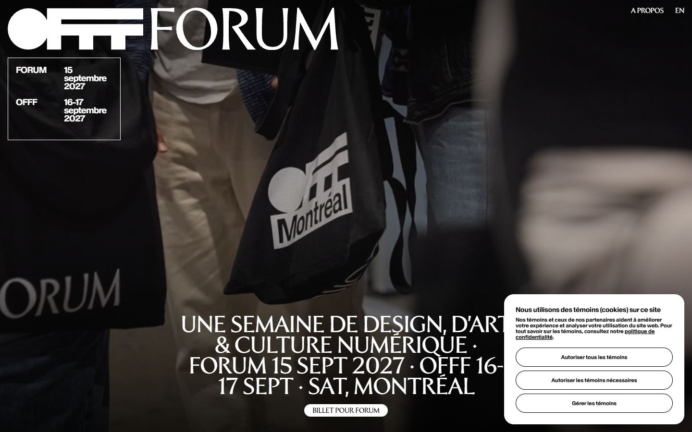
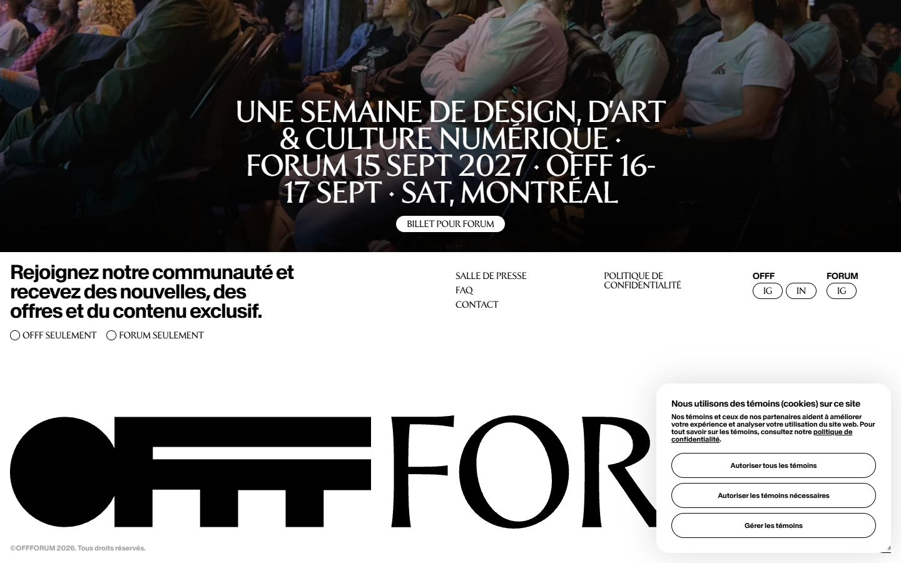
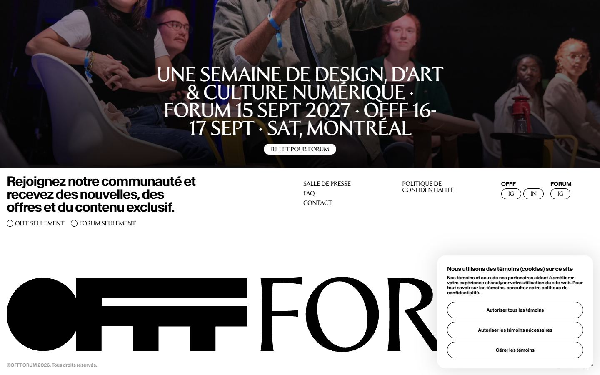

OFFFForum
Captures desktop

Pages internes









Mobile
Stack détectée
CMS Datocms, GSAP, Lenis, Nuxt, ScrollTrigger, SplitText/SplitType, Virtual scroll, Vue
Versions : GSAP 3.11.0 · Three.js r?
Design tokens
Couleurs (fonds, pondérées par surface)
#ffffff · #000000
Couleurs de texte
#000000 · #ffffff
Polices utilisées (par volume de texte)
Baikal · Forvm
Fichiers de police chargés
Typographie
| Élément | Police | Taille | Graisse | Interligne | Interlettrage | Casse |
|---|---|---|---|---|---|---|
| h1 | Forvm, serif | 45px | 400 | 43px | -0.9px | uppercase |
| h3 | Baikal, sans-serif | 32px | 600 | 31px | -1.28px | none |
| p | Baikal, sans-serif | 14px | 600 | 15px | -0.28px | none |
| a | Baikal, sans-serif | 11px | 600 | 12px | normal | none |
| button | Baikal, sans-serif | 11px | 600 | 12px | normal | none |
| li | Forvm, serif | 14px | 400 | 12px | -0.28px | uppercase |
| body | Baikal, sans-serif | 10px | 400 | 15px | normal | none |
Échelle des tailles de texte
14px (19) · 11px (14) · 10px (6) · 18px (5) · 30px (4) · 45px (1) · 32px (1)
Arrondis
3.35544e+07px · 40px · 50% · 20px
Transitions CSS fréquentes
Points de rupture (media queries)
64rem · 48rem · 40rem · 80rem · 90rem
Animations CSS (@keyframes)
(aucune)
Variables CSS (:root)
--spacing: .1rem; --font-weight-semibold: 600; --ease-in-out: cubic-bezier(.4, 0, .2, 1); --aspect-video: 16 / 9; --default-transition-duration: .15s; --default-transition-timing-function: cubic-bezier(.4, 0, .2, 1); --font-baikal: "Baikal", sans-serif; --font-forvm: "Forvm", serif; --text-body-mobile: 1.8rem; --text-body-mobile--line-height: 2rem; --text-body-mobile--font-weight: 600; --text-body-mobile--letter-spacing: -.04em; --text-body-desktop: 2.4rem; --text-body-desktop--line-height: 2.6rem; --text-body-desktop--font-weight: 600; --text-body-desktop--letter-spacing: -.04em; --text-body-2-mobile: 1.4rem; --text-body-2-mobile--line-height: 1.7rem; --text-body-2-mobile--font-weight: 600; --text-body-2-mobile--letter-spacing: -.02em; --text-body-2-desktop: 1.8rem; --text-body-2-desktop--line-height: 2rem; --text-body-2-desktop--font-weight: 600; --text-body-2-desktop--letter-spacing: -.04em; --text-button-mobile: 1.1rem; --text-button-mobile--line-height: 1.2rem; --text-button-mobile--font-weight: 400; --text-button-mobile--letter-spacing: -.02em; --text-button-desktop: 1.4rem; --text-button-desktop--line-height: 1.2rem; --text-button-desktop--font-weight: 400; --text-button-desktop--letter-spacing: -.02em; --text-small: 1.1rem; --text-small--line-height: 1.2rem; --text-small--font-weight: 600; --text-tag-mobile: .9rem; --text-tag-mobile--line-height: 1rem; --text-tag-mobile--font-weight: 400; --text-tag-desktop: 1.1rem; --text-tag-desktop--line-height: 1rem; --text-tag-desktop--font-weight: 400; --text-tag-desktop--letter-spacing: -.02em; --text-h1-mobile-offf: 3.2rem; --text-h1-mobile-offf--line-height: 3.1rem; --text-h1-mobile-offf--font-weight: 600; --text-h1-mobile-offf--letter-spacing: -.04em; --text-h1-desktop-offf: 8rem; --text-h1-desktop-offf--line-height: 7.7rem; --text-h1-desktop-offf--font-weight: 600; --text-h1-desktop-offf--letter-spacing: -.04em; --text-h2-mobile-offf: 3.2rem; --text-h2-mobile-offf--line-height: 3.1rem; --text-h2-mobile-offf--font-weight: 600; --text-h2-mobile-offf--letter-spacing: -.04em; --text-h2-desktop-offf: 4.8rem; --text-h2-desktop-offf--line-height: 4.6rem; --text-h2-desktop-offf--font-weight: 600; --text-h2-desktop-offf--letter-spacing: -.04em; --text-h3-mobile-offf: 2.4rem; --text-h3-mobile-offf--line-height: 2.3rem; --text-h3-mobile-offf--font-weight: 600; --text-h3-mobile-offf--letter-spacing: -.04em; --text-h3-desktop-offf: 3.2rem; --text-h3-desktop-offf--line-height: 3.1rem; --text-h3-desktop-offf--font-weight: 600; --text-h3-desktop-offf--letter-spacing: -.04em; --text-h4-desktop-offf: 1.8rem; --text-h4-desktop-offf--line-height: 1.7rem; --text-h4-desktop-offf--font-weight: 600; --text-h4-desktop-offf--letter-spacing: -.04em; --text-h4-mobile-offf: 1.6rem; --text-h4-mobile-offf--line-height: 1.5rem; --text-h4-mobile-offf--font-weight: 600; --text-h4-mobile-offf--letter-spacing: -.06em; --text-h5-mobile-offf: 1.2rem; --text-h5-mobile-offf--line-height: 1.3rem; --text-h5-mobile-offf--font-weight: 600; --text-h5-mobile-offf--letter-spacing: -.02em; --text-h5-desktop-offf: 1.4rem; --text-h5-desktop-offf--line-height: 1.5rem;
Structure de la home
Hauteur : 1397 px — 287 nœuds DOM — canvas 0, vidéos 0, images 3
| # | Bloc | Hauteur | Titre | Médias |
|---|---|---|---|---|
| 1 | div .page relative | 1397 | A WEEK OF DESIGN, ART & DIGITAL CULTURE · FORUM · SEPT 15, 2027 · OFFF SEPT 16–1 | 4 |
Navigation : About · fr · fr · About · Media room · Contact · FAQ · fr · fr
Boutons / CTA :
SEO
Plan des titres
Performance (mesure locale, Chrome headless, connexion non bridée)
Mobile
Fichiers
captures/ : arrivée, scroll desktop (1440×900), pleine page, pages internes, mobile (390×844 @2x) ; vidéo de scroll dans la release GitHub « videos » (lien en haut de fiche)page.html : DOM rendu · styles.css : CSS chargé · scripts/ : JS chargé (index dans _index.json) · shaders.glsl : shaders extraits · rea-bundle.json : analyse REA du bundle (chunks, routes, endpoints)